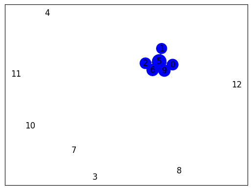

Scraping Data#
import requests
from bs4 import BeautifulSoup
import nltk
import pandas as pd
# Unduh konten halaman web berita
url = "https://radarjatim.id/akhir-tahun-berkah-dengan-mewujudkan-mushola-layak-di-pelosok-probolinggo/"
response = requests.get(url)
html = response.text
# Parsing halaman web menggunakan BeautifulSoup
soup = BeautifulSoup(html, 'html.parser')
# Ekstraksi teks dari elemen-elemen yang berisi berita
article = soup.find('div', class_="content-inner") # Sesuaikan dengan struktur HTML halaman web berita
# Periksa apakah elemen article ada sebelum mencoba mengambil teksnya
if article is not None:
article_text = article.get_text()
# Tokenisasi teks menjadi kalimat menggunakan nltk
nltk.download('punkt') # Pastikan Anda sudah mengunduh tokenisasi kalimat nltk
sentences = nltk.sent_tokenize(article_text) #Proses pemecahan kalimat - kalimat
# Cetak kalimat-kalimat
for sentence in sentences:
print(sentence)
else:
print("Elemen berita tidak ditemukan")
PROBOLINGGO (RadarJatim.id) Di penghujung tahun 2023 ini, Laznas BMH terus istiqomah menebar kebaikan di pelosok Jawa Timur bersama para donatur dan dermawan.
Mulai pembangunan mushola pelosok, pembangunan instalasi sumur bor untuk masjid atau pesantren, pendistribusian mushaf Al Qur’an untuk masjid pelosok, solidaritas muslim Palestina, dan masih banyak lagi.
Kondisi bangunan mushola Al Munir yang perlu pembenahan.
Sebagaimana diketahui bersama bahwasanya Laznas BMH telah mendapatkan berbagai peghargaan dari Baznas Award 2019 sampai dengan 2022 dalam kategori SDM dan Jaringan Terbaik.
Sserta Pendistribusian ZIS Terbaik juga Keuangan Terbaik dan teraudit dengan Predikat Wajar Tanpa Pengecualian 16 kali berturut turut dan terus berkontribusi membangun negeri di 3T (Terdepan, Tertinggal dan Terdalam).
Olehnya, pada momen akhir tahun ini Laznas BMH menawarkan sinergi untuk pembangunan mushola pelosok di Probolinggo, tepatnya di desa Sambirampak Kabupaten Probolinggo yang bernama Mushola Al Munir.
Kondisi bangunan mushola Al Munir di Desa Sambirampak, Probolinggo
“Yakni kondisi mushola tersebut sudah 47 tahun silam dan sangat memprihantinkan sekali .
Apalagi musim hujan pasti bocor dan kayu kayu banyak di makan rayap mata.
Pencaharian sekitar warga adalah buruh tani, jumlah warga 200 KK, Santri yang mengaji 23 anak,” kata Munir.
Karenanya Yukk tutup akhir tahun berkah ini dengan bersinergi dan berdonasi untuk wujudkan mushola yang layak di Pelosok Probolinggo.
Paket Donasi : Rp.2.700.000/M2 (Biaya Kontruksi Bangunan) , Rp.
250.000 (Donasi Suka suka) atau bisa di transfer melalui rekening : BCA Syariah – 0160030000, Mandiri – 1410007554579 atas nama Baitul Maal Hidayatullah atau bisa menghubungi call center 081336337811 atau 081440001642.
(RJ/RED)
Tags: BMHLaznas BMHMushola
[nltk_data] Downloading package punkt to /root/nltk_data...
[nltk_data] Package punkt is already up-to-date!
# Inisialisasi DataFrame setiap kalimatnya
df = pd.DataFrame(columns=["Kalimat"])
df["Kalimat"] = sentences
df
| Kalimat | |
|---|---|
| 0 | \nPROBOLINGGO (RadarJatim.id) Di penghujung ta... |
| 1 | Mulai pembangunan mushola pelosok, pembangunan... |
| 2 | Kondisi bangunan mushola Al Munir yang perlu p... |
| 3 | Sebagaimana diketahui bersama bahwasanya Lazna... |
| 4 | Sserta Pendistribusian ZIS Terbaik juga Keuang... |
| 5 | Olehnya, pada momen akhir tahun ini Laznas BMH... |
| 6 | Kondisi bangunan mushola Al Munir di Desa Samb... |
| 7 | Apalagi musim hujan pasti bocor dan kayu kayu ... |
| 8 | Pencaharian sekitar warga adalah buruh tani, j... |
| 9 | Karenanya Yukk tutup akhir tahun berkah ini de... |
| 10 | Paket Donasi : Rp.2.700.000/M2 (Biaya Kontruks... |
| 11 | 250.000 (Donasi Suka suka) atau bisa di transf... |
| 12 | (RJ/RED)\nTags: BMHLaznas BMHMushola |
Ekstraksi Fitur#
TF-IDF#
from sklearn.feature_extraction.text import TfidfVectorizer
# Inisialisasi penghitung TF-IDF
tfidf_vectorizer = TfidfVectorizer()
# Hitung TF-IDF
tfidf_matrix = tfidf_vectorizer.fit_transform(sentences)
# Daftar kata kunci
feature_names = tfidf_vectorizer.get_feature_names_out()
# Konversi matriks TF-IDF menjadi bentuk yang lebih mudah dibaca
tfidf_values = tfidf_matrix.toarray()
# Cetak TF-IDF untuk setiap kata dalam setiap kalimat
for i, sentence in enumerate(sentences):
print(f"Kalimat {i + 1}: {sentence}")
for j, word in enumerate(feature_names):
tfidf_value = tfidf_values[i][j]
if tfidf_value > 0:
print(f"{word}: {tfidf_value:.4f}")
print()
Kalimat 1:
PROBOLINGGO (RadarJatim.id) Di penghujung tahun 2023 ini, Laznas BMH terus istiqomah menebar kebaikan di pelosok Jawa Timur bersama para donatur dan dermawan.
2023: 0.2353
bersama: 0.2029
bmh: 0.1799
dan: 0.1246
dermawan: 0.2353
di: 0.2491
donatur: 0.2353
id: 0.2353
ini: 0.1799
istiqomah: 0.2353
jawa: 0.2353
kebaikan: 0.2353
laznas: 0.1799
menebar: 0.2353
para: 0.2353
pelosok: 0.1621
penghujung: 0.2353
probolinggo: 0.1621
radarjatim: 0.2353
tahun: 0.1621
terus: 0.2029
timur: 0.2353
Kalimat 2: Mulai pembangunan mushola pelosok, pembangunan instalasi sumur bor untuk masjid atau pesantren, pendistribusian mushaf Al Qur’an untuk masjid pelosok, solidaritas muslim Palestina, dan masih banyak lagi.
al: 0.1312
an: 0.1904
atau: 0.1642
banyak: 0.1642
bor: 0.1904
dan: 0.1008
instalasi: 0.1904
lagi: 0.1904
masih: 0.1904
masjid: 0.3808
mulai: 0.1904
mushaf: 0.1904
mushola: 0.1194
muslim: 0.1904
palestina: 0.1904
pelosok: 0.2623
pembangunan: 0.3283
pendistribusian: 0.1642
pesantren: 0.1904
qur: 0.1904
solidaritas: 0.1904
sumur: 0.1904
untuk: 0.2912
Kalimat 3: Kondisi bangunan mushola Al Munir yang perlu pembenahan.
al: 0.3037
bangunan: 0.3371
kondisi: 0.3802
munir: 0.3037
mushola: 0.2764
pembenahan: 0.4408
perlu: 0.4408
yang: 0.3037
Kalimat 4: Sebagaimana diketahui bersama bahwasanya Laznas BMH telah mendapatkan berbagai peghargaan dari Baznas Award 2019 sampai dengan 2022 dalam kategori SDM dan Jaringan Terbaik.
2019: 0.2207
2022: 0.2207
award: 0.2207
bahwasanya: 0.2207
baznas: 0.2207
berbagai: 0.2207
bersama: 0.1904
bmh: 0.1688
dalam: 0.2207
dan: 0.1169
dari: 0.2207
dengan: 0.1688
diketahui: 0.2207
jaringan: 0.2207
kategori: 0.2207
laznas: 0.1688
mendapatkan: 0.2207
peghargaan: 0.2207
sampai: 0.2207
sdm: 0.2207
sebagaimana: 0.2207
telah: 0.2207
terbaik: 0.1904
Kalimat 5: Sserta Pendistribusian ZIS Terbaik juga Keuangan Terbaik dan teraudit dengan Predikat Wajar Tanpa Pengecualian 16 kali berturut turut dan terus berkontribusi membangun negeri di 3T (Terdepan, Tertinggal dan Terdalam).
16: 0.1895
3t: 0.1895
berkontribusi: 0.1895
berturut: 0.1895
dan: 0.3010
dengan: 0.1449
di: 0.1003
juga: 0.1895
kali: 0.1895
keuangan: 0.1895
membangun: 0.1895
negeri: 0.1895
pendistribusian: 0.1634
pengecualian: 0.1895
predikat: 0.1895
sserta: 0.1895
tanpa: 0.1895
teraudit: 0.1895
terbaik: 0.3268
terdalam: 0.1895
terdepan: 0.1895
tertinggal: 0.1895
terus: 0.1634
turut: 0.1895
wajar: 0.1895
zis: 0.1895
Kalimat 6: Olehnya, pada momen akhir tahun ini Laznas BMH menawarkan sinergi untuk pembangunan mushola pelosok di Probolinggo, tepatnya di desa Sambirampak Kabupaten Probolinggo yang bernama Mushola Al Munir.
akhir: 0.1915
al: 0.1530
bernama: 0.2221
bmh: 0.1698
desa: 0.1915
di: 0.2351
ini: 0.1698
kabupaten: 0.2221
laznas: 0.1698
menawarkan: 0.2221
momen: 0.2221
munir: 0.1530
mushola: 0.2785
olehnya: 0.2221
pada: 0.2221
pelosok: 0.1530
pembangunan: 0.1915
probolinggo: 0.3060
sambirampak: 0.1915
sinergi: 0.2221
tahun: 0.1530
tepatnya: 0.2221
untuk: 0.1698
yang: 0.1530
Kalimat 7: Kondisi bangunan mushola Al Munir di Desa Sambirampak, Probolinggo
“Yakni kondisi mushola tersebut sudah 47 tahun silam dan sangat memprihantinkan sekali .
47: 0.2420
al: 0.1667
bangunan: 0.1850
dan: 0.1281
desa: 0.2087
di: 0.1281
kondisi: 0.4173
memprihantinkan: 0.2420
munir: 0.1667
mushola: 0.3035
probolinggo: 0.1667
sambirampak: 0.2087
sangat: 0.2420
sekali: 0.2420
silam: 0.2420
sudah: 0.2420
tahun: 0.1667
tersebut: 0.2420
yakni: 0.2420
Kalimat 8: Apalagi musim hujan pasti bocor dan kayu kayu banyak di makan rayap mata.
apalagi: 0.2742
banyak: 0.2364
bocor: 0.2742
dan: 0.1451
di: 0.1451
hujan: 0.2742
kayu: 0.5483
makan: 0.2742
mata: 0.2742
musim: 0.2742
pasti: 0.2742
rayap: 0.2742
Kalimat 9: Pencaharian sekitar warga adalah buruh tani, jumlah warga 200 KK, Santri yang mengaji 23 anak,” kata Munir.
200: 0.2360
23: 0.2360
adalah: 0.2360
anak: 0.2360
buruh: 0.2360
jumlah: 0.2360
kata: 0.2360
kk: 0.2360
mengaji: 0.2360
munir: 0.1626
pencaharian: 0.2360
santri: 0.2360
sekitar: 0.2360
tani: 0.2360
warga: 0.4721
yang: 0.1626
Kalimat 10: Karenanya Yukk tutup akhir tahun berkah ini dengan bersinergi dan berdonasi untuk wujudkan mushola yang layak di Pelosok Probolinggo.
akhir: 0.2360
berdonasi: 0.2737
berkah: 0.2737
bersinergi: 0.2737
dan: 0.1449
dengan: 0.2093
di: 0.1449
ini: 0.2093
karenanya: 0.2737
layak: 0.2737
mushola: 0.1716
pelosok: 0.1886
probolinggo: 0.1886
tahun: 0.1886
tutup: 0.2737
untuk: 0.2093
wujudkan: 0.2737
yang: 0.1886
yukk: 0.2737
Kalimat 11: Paket Donasi : Rp.2.700.000/M2 (Biaya Kontruksi Bangunan) , Rp.
000: 0.2592
700: 0.3005
bangunan: 0.2298
biaya: 0.3005
donasi: 0.2592
kontruksi: 0.3005
m2: 0.3005
paket: 0.3005
rp: 0.6011
Kalimat 12: 250.000 (Donasi Suka suka) atau bisa di transfer melalui rekening : BCA Syariah – 0160030000, Mandiri – 1410007554579 atas nama Baitul Maal Hidayatullah atau bisa menghubungi call center 081336337811 atau 081440001642.
000: 0.1448
0160030000: 0.1679
081336337811: 0.1679
081440001642: 0.1679
1410007554579: 0.1679
250: 0.1679
atas: 0.1679
atau: 0.4344
baitul: 0.1679
bca: 0.1679
bisa: 0.3359
call: 0.1679
center: 0.1679
di: 0.0889
donasi: 0.1448
hidayatullah: 0.1679
maal: 0.1679
mandiri: 0.1679
melalui: 0.1679
menghubungi: 0.1679
nama: 0.1679
rekening: 0.1679
suka: 0.3359
syariah: 0.1679
transfer: 0.1679
Kalimat 13: (RJ/RED)
Tags: BMHLaznas BMHMushola
bmhlaznas: 0.4472
bmhmushola: 0.4472
red: 0.4472
rj: 0.4472
tags: 0.4472
from sklearn.metrics.pairwise import cosine_similarity
from sklearn.feature_extraction.text import TfidfVectorizer
# Indeks kalimat yang akan dibandingkan
sentence1_index = 0 # Ganti dengan indeks kalimat pertama yang ingin Anda bandingkan
sentence2_index = 1 # Ganti dengan indeks kalimat kedua yang ingin Anda bandingkan
# Ambil vektor TF-IDF untuk kedua kalimat
tfidf_vector1 = tfidf_matrix[sentence1_index]
tfidf_vector2 = tfidf_matrix[sentence2_index]
# Hitung cosine similarity antara kedua vektor
similarity = cosine_similarity(tfidf_vector1, tfidf_vector2)
# Cetak hasil cosine similarity
print(f"Cosine Similarity antara Kalimat {sentence1_index + 1} dan Kalimat {sentence2_index + 1}: {similarity[0][0]:.4f}")
Cosine Similarity antara Kalimat 1 dan Kalimat 2: 0.0551
Menyusun dan Menampilkan Graph#
Cosine Similarity#
# Matriks TF-IDF telah dihitung sebelumnya (tfidf_matrix)
# Hitung cosine similarity antara semua pasangan kalimat
similarity_matrix = cosine_similarity(tfidf_matrix, tfidf_matrix)
# Cetak hasil similarity_matrix
num_sentences = len(sentences) # Jumlah kalimat
for i in range(num_sentences):
for j in range(i+1, num_sentences):
similarity = similarity_matrix[i][j]
print(f"Cosine Similarity antara Kalimat {i + 1} dan Kalimat {j + 1}: {similarity:.4f}")
Cosine Similarity antara Kalimat 1 dan Kalimat 2: 0.0551
Cosine Similarity antara Kalimat 1 dan Kalimat 3: 0.0000
Cosine Similarity antara Kalimat 1 dan Kalimat 4: 0.1139
Cosine Similarity antara Kalimat 1 dan Kalimat 5: 0.0956
Cosine Similarity antara Kalimat 1 dan Kalimat 6: 0.2494
Cosine Similarity antara Kalimat 1 dan Kalimat 7: 0.1019
Cosine Similarity antara Kalimat 1 dan Kalimat 8: 0.0542
Cosine Similarity antara Kalimat 1 dan Kalimat 9: 0.0000
Cosine Similarity antara Kalimat 1 dan Kalimat 10: 0.1835
Cosine Similarity antara Kalimat 1 dan Kalimat 11: 0.0000
Cosine Similarity antara Kalimat 1 dan Kalimat 12: 0.0221
Cosine Similarity antara Kalimat 1 dan Kalimat 13: 0.0000
Cosine Similarity antara Kalimat 2 dan Kalimat 3: 0.0728
Cosine Similarity antara Kalimat 2 dan Kalimat 4: 0.0118
Cosine Similarity antara Kalimat 2 dan Kalimat 5: 0.0572
Cosine Similarity antara Kalimat 2 dan Kalimat 6: 0.2058
Cosine Similarity antara Kalimat 2 dan Kalimat 7: 0.0710
Cosine Similarity antara Kalimat 2 dan Kalimat 8: 0.0534
Cosine Similarity antara Kalimat 2 dan Kalimat 9: 0.0000
Cosine Similarity antara Kalimat 2 dan Kalimat 10: 0.1455
Cosine Similarity antara Kalimat 2 dan Kalimat 11: 0.0000
Cosine Similarity antara Kalimat 2 dan Kalimat 12: 0.0713
Cosine Similarity antara Kalimat 2 dan Kalimat 13: 0.0000
Cosine Similarity antara Kalimat 3 dan Kalimat 4: 0.0000
Cosine Similarity antara Kalimat 3 dan Kalimat 5: 0.0000
Cosine Similarity antara Kalimat 3 dan Kalimat 6: 0.2164
Cosine Similarity antara Kalimat 3 dan Kalimat 7: 0.4062
Cosine Similarity antara Kalimat 3 dan Kalimat 8: 0.0000
Cosine Similarity antara Kalimat 3 dan Kalimat 9: 0.0988
Cosine Similarity antara Kalimat 3 dan Kalimat 10: 0.1047
Cosine Similarity antara Kalimat 3 dan Kalimat 11: 0.0775
Cosine Similarity antara Kalimat 3 dan Kalimat 12: 0.0000
Cosine Similarity antara Kalimat 3 dan Kalimat 13: 0.0000
Cosine Similarity antara Kalimat 4 dan Kalimat 5: 0.1218
Cosine Similarity antara Kalimat 4 dan Kalimat 6: 0.0573
Cosine Similarity antara Kalimat 4 dan Kalimat 7: 0.0150
Cosine Similarity antara Kalimat 4 dan Kalimat 8: 0.0170
Cosine Similarity antara Kalimat 4 dan Kalimat 9: 0.0000
Cosine Similarity antara Kalimat 4 dan Kalimat 10: 0.0523
Cosine Similarity antara Kalimat 4 dan Kalimat 11: 0.0000
Cosine Similarity antara Kalimat 4 dan Kalimat 12: 0.0000
Cosine Similarity antara Kalimat 4 dan Kalimat 13: 0.0000
Cosine Similarity antara Kalimat 5 dan Kalimat 6: 0.0236
Cosine Similarity antara Kalimat 5 dan Kalimat 7: 0.0514
Cosine Similarity antara Kalimat 5 dan Kalimat 8: 0.0582
Cosine Similarity antara Kalimat 5 dan Kalimat 9: 0.0000
Cosine Similarity antara Kalimat 5 dan Kalimat 10: 0.0885
Cosine Similarity antara Kalimat 5 dan Kalimat 11: 0.0000
Cosine Similarity antara Kalimat 5 dan Kalimat 12: 0.0089
Cosine Similarity antara Kalimat 5 dan Kalimat 13: 0.0000
Cosine Similarity antara Kalimat 6 dan Kalimat 7: 0.3221
Cosine Similarity antara Kalimat 6 dan Kalimat 8: 0.0341
Cosine Similarity antara Kalimat 6 dan Kalimat 9: 0.0498
Cosine Similarity antara Kalimat 6 dan Kalimat 10: 0.3424
Cosine Similarity antara Kalimat 6 dan Kalimat 11: 0.0000
Cosine Similarity antara Kalimat 6 dan Kalimat 12: 0.0209
Cosine Similarity antara Kalimat 6 dan Kalimat 13: 0.0000
Cosine Similarity antara Kalimat 7 dan Kalimat 8: 0.0372
Cosine Similarity antara Kalimat 7 dan Kalimat 9: 0.0271
Cosine Similarity antara Kalimat 7 dan Kalimat 10: 0.1521
Cosine Similarity antara Kalimat 7 dan Kalimat 11: 0.0425
Cosine Similarity antara Kalimat 7 dan Kalimat 12: 0.0114
Cosine Similarity antara Kalimat 7 dan Kalimat 13: 0.0000
Cosine Similarity antara Kalimat 8 dan Kalimat 9: 0.0000
Cosine Similarity antara Kalimat 8 dan Kalimat 10: 0.0421
Cosine Similarity antara Kalimat 8 dan Kalimat 11: 0.0000
Cosine Similarity antara Kalimat 8 dan Kalimat 12: 0.0129
Cosine Similarity antara Kalimat 8 dan Kalimat 13: 0.0000
Cosine Similarity antara Kalimat 9 dan Kalimat 10: 0.0307
Cosine Similarity antara Kalimat 9 dan Kalimat 11: 0.0000
Cosine Similarity antara Kalimat 9 dan Kalimat 12: 0.0000
Cosine Similarity antara Kalimat 9 dan Kalimat 13: 0.0000
Cosine Similarity antara Kalimat 10 dan Kalimat 11: 0.0000
Cosine Similarity antara Kalimat 10 dan Kalimat 12: 0.0129
Cosine Similarity antara Kalimat 10 dan Kalimat 13: 0.0000
Cosine Similarity antara Kalimat 11 dan Kalimat 12: 0.0751
Cosine Similarity antara Kalimat 11 dan Kalimat 13: 0.0000
Cosine Similarity antara Kalimat 12 dan Kalimat 13: 0.0000
import pandas as pd
# Matriks TF-IDF telah dihitung sebelumnya (tfidf_matrix)
# Hitung cosine similarity antara semua pasangan kalimat
similarity_matrix = cosine_similarity(tfidf_matrix, tfidf_matrix)
# Nama kolom dan indeks untuk DataFrame
sentence_indices = [f"Kalimat {i + 1}" for i in range(len(sentences))]
# Buat DataFrame dari hasil cosine similarity
df = pd.DataFrame(similarity_matrix, columns=sentence_indices, index=sentence_indices)
# Cetak DataFrame
df
| Kalimat 1 | Kalimat 2 | Kalimat 3 | Kalimat 4 | Kalimat 5 | Kalimat 6 | Kalimat 7 | Kalimat 8 | Kalimat 9 | Kalimat 10 | Kalimat 11 | Kalimat 12 | Kalimat 13 | |
|---|---|---|---|---|---|---|---|---|---|---|---|---|---|
| Kalimat 1 | 1.000000 | 0.055073 | 0.000000 | 0.113916 | 0.095629 | 0.249413 | 0.101912 | 0.054235 | 0.000000 | 0.183483 | 0.000000 | 0.022147 | 0.0 |
| Kalimat 2 | 0.055073 | 1.000000 | 0.072837 | 0.011779 | 0.057161 | 0.205765 | 0.071006 | 0.053444 | 0.000000 | 0.145492 | 0.000000 | 0.071325 | 0.0 |
| Kalimat 3 | 0.000000 | 0.072837 | 1.000000 | 0.000000 | 0.000000 | 0.216385 | 0.406194 | 0.000000 | 0.098781 | 0.104711 | 0.077474 | 0.000000 | 0.0 |
| Kalimat 4 | 0.113916 | 0.011779 | 0.000000 | 1.000000 | 0.121848 | 0.057330 | 0.014971 | 0.016963 | 0.000000 | 0.052262 | 0.000000 | 0.000000 | 0.0 |
| Kalimat 5 | 0.095629 | 0.057161 | 0.000000 | 0.121848 | 1.000000 | 0.023588 | 0.051406 | 0.058244 | 0.000000 | 0.088470 | 0.000000 | 0.008919 | 0.0 |
| Kalimat 6 | 0.249413 | 0.205765 | 0.216385 | 0.057330 | 0.023588 | 1.000000 | 0.322080 | 0.034127 | 0.049758 | 0.342376 | 0.000000 | 0.020904 | 0.0 |
| Kalimat 7 | 0.101912 | 0.071006 | 0.406194 | 0.014971 | 0.051406 | 0.322080 | 1.000000 | 0.037188 | 0.027110 | 0.152075 | 0.042525 | 0.011389 | 0.0 |
| Kalimat 8 | 0.054235 | 0.053444 | 0.000000 | 0.016963 | 0.058244 | 0.034127 | 0.037188 | 1.000000 | 0.000000 | 0.042061 | 0.000000 | 0.012904 | 0.0 |
| Kalimat 9 | 0.000000 | 0.000000 | 0.098781 | 0.000000 | 0.000000 | 0.049758 | 0.027110 | 0.000000 | 1.000000 | 0.030663 | 0.000000 | 0.000000 | 0.0 |
| Kalimat 10 | 0.183483 | 0.145492 | 0.104711 | 0.052262 | 0.088470 | 0.342376 | 0.152075 | 0.042061 | 0.030663 | 1.000000 | 0.000000 | 0.012882 | 0.0 |
| Kalimat 11 | 0.000000 | 0.000000 | 0.077474 | 0.000000 | 0.000000 | 0.000000 | 0.042525 | 0.000000 | 0.000000 | 0.000000 | 1.000000 | 0.075062 | 0.0 |
| Kalimat 12 | 0.022147 | 0.071325 | 0.000000 | 0.000000 | 0.008919 | 0.020904 | 0.011389 | 0.012904 | 0.000000 | 0.012882 | 0.075062 | 1.000000 | 0.0 |
| Kalimat 13 | 0.000000 | 0.000000 | 0.000000 | 0.000000 | 0.000000 | 0.000000 | 0.000000 | 0.000000 | 0.000000 | 0.000000 | 0.000000 | 0.000000 | 1.0 |
import pandas as pd
import numpy as np
import matplotlib.pyplot as plt
# Matriks TF-IDF telah dihitung sebelumnya (tfidf_matrix)
# Hitung cosine similarity antara semua pasangan kalimat
similarity_matrix = cosine_similarity(tfidf_matrix, tfidf_matrix)
# Nama kolom dan indeks untuk DataFrame
sentence_indices = [f"Kalimat {i + 1}" for i in range(len(sentences))]
# Buat DataFrame dari hasil cosine similarity
df = pd.DataFrame(similarity_matrix, columns=sentence_indices, index=sentence_indices)
# Membuat grafik matriks
fig, ax = plt.subplots()
cax = ax.matshow(df, cmap='coolwarm')
fig.colorbar(cax)
# Memberi label pada sumbu X dan Y
ax.set_xticks(np.arange(len(df.columns)))
ax.set_yticks(np.arange(len(df.index)))
ax.set_xticklabels(df.columns, rotation=90)
ax.set_yticklabels(df.index)
# Menampilkan nilai similarity pada matriks
for i in range(len(df.index)):
for j in range(len(df.columns)):
text = ax.text(j, i, f'{df.iat[i, j]:.2f}', ha='center', va='center', color='w')
plt.show()
import networkx as nx
# Buat grafik dari matriks similarity
G = nx.Graph()
# Tambahkan simpul (node) ke grafik yang mewakili setiap kalimat
for sentence in sentences:
G.add_node(sentence)
# Tambahkan tepi (edge) antara kalimat berdasarkan similarity
for i in range(len(sentences)):
for j in range(i + 1, len(sentences)):
similarity = df.iloc[i, j] # Mengambil similarity dari DataFrame
if similarity > 0:
G.add_edge(sentences[i], sentences[j], weight=similarity)
# Hitung closeness centrality untuk setiap simpul
closeness_centrality = nx.closeness_centrality(G, distance='weight')
# Cetak closeness centrality
for sentence, centrality in closeness_centrality.items():
print(f"Closeness Centrality of {sentence}: {centrality:.4f}")
Closeness Centrality of
PROBOLINGGO (RadarJatim.id) Di penghujung tahun 2023 ini, Laznas BMH terus istiqomah menebar kebaikan di pelosok Jawa Timur bersama para donatur dan dermawan.: 17.7500
Closeness Centrality of Mulai pembangunan mushola pelosok, pembangunan instalasi sumur bor untuk masjid atau pesantren, pendistribusian mushaf Al Qur’an untuk masjid pelosok, solidaritas muslim Palestina, dan masih banyak lagi.: 19.6336
Closeness Centrality of Kondisi bangunan mushola Al Munir yang perlu pembenahan.: 8.9214
Closeness Centrality of Sebagaimana diketahui bersama bahwasanya Laznas BMH telah mendapatkan berbagai peghargaan dari Baznas Award 2019 sampai dengan 2022 dalam kategori SDM dan Jaringan Terbaik.: 23.7501
Closeness Centrality of Sserta Pendistribusian ZIS Terbaik juga Keuangan Terbaik dan teraudit dengan Predikat Wajar Tanpa Pengecualian 16 kali berturut turut dan terus berkontribusi membangun negeri di 3T (Terdepan, Tertinggal dan Terdalam).: 22.9173
Closeness Centrality of Olehnya, pada momen akhir tahun ini Laznas BMH menawarkan sinergi untuk pembangunan mushola pelosok di Probolinggo, tepatnya di desa Sambirampak Kabupaten Probolinggo yang bernama Mushola Al Munir.: 18.3270
Closeness Centrality of Kondisi bangunan mushola Al Munir di Desa Sambirampak, Probolinggo
“Yakni kondisi mushola tersebut sudah 47 tahun silam dan sangat memprihantinkan sekali .: 28.2419
Closeness Centrality of Apalagi musim hujan pasti bocor dan kayu kayu banyak di makan rayap mata.: 24.0555
Closeness Centrality of Pencaharian sekitar warga adalah buruh tani, jumlah warga 200 KK, Santri yang mengaji 23 anak,” kata Munir.: 17.6944
Closeness Centrality of Karenanya Yukk tutup akhir tahun berkah ini dengan bersinergi dan berdonasi untuk wujudkan mushola yang layak di Pelosok Probolinggo.: 22.6090
Closeness Centrality of Paket Donasi : Rp.2.700.000/M2 (Biaya Kontruksi Bangunan) , Rp.: 14.0505
Closeness Centrality of 250.000 (Donasi Suka suka) atau bisa di transfer melalui rekening : BCA Syariah – 0160030000, Mandiri – 1410007554579 atas nama Baitul Maal Hidayatullah atau bisa menghubungi call center 081336337811 atau 081440001642.: 28.2419
Closeness Centrality of (RJ/RED)
Tags: BMHLaznas BMHMushola: 0.0000
Graph#
import networkx as nx
# Matriks TF-IDF telah dihitung sebelumnya (tfidf_matrix)
# Hitung cosine similarity antara semua pasangan kalimat
similarity_matrix = cosine_similarity(tfidf_matrix, tfidf_matrix)
# Buat grafik berarah (DiGraph) berdasarkan similarity_matrix
G = nx.DiGraph()
for i in range(len(similarity_matrix)):
G.add_node(i) # Tambahkan node dengan indeks numerik
for i in range(len(similarity_matrix)):
for j in range(len(similarity_matrix)):
similarity = similarity_matrix[i][j]
if similarity > 0.15 and i != j: # Pastikan node tidak menghubungkan dirinya sendiri
G.add_edge(i, j)
# Hitung closeness centrality
closeness_centrality = nx.closeness_centrality(G)
# Visualisasi closeness centrality
pos = nx.spring_layout(G) # Atur layout grafik
node_size = [v * 1000 for v in closeness_centrality.values()] # Ubah ukuran node berdasarkan closeness centrality, dengan faktor pengurangan ukuran
nx.draw_networkx_nodes(G, pos, node_size=node_size, node_color='b')
nx.draw_networkx_edges(G, pos, edge_color='gray', arrows=True)
nx.draw_networkx_labels(G, pos)
plt.show()

Matriks Sentralitas#
Closeness Cetrality#
# Cetak closeness centrality
print("Closeness Centrality:")
# for node, closeness in closeness_centrality.items():
# print(f"Node {node}: {closeness:.4f}")
sorted_closeness = dict(sorted(closeness_centrality.items(), key=lambda item: item[1], reverse=True))
for node, closeness in sorted_closeness.items():
print(f"Node {node}: {closeness:.4f}")
Closeness Centrality:
Node 5: 0.4167
Node 6: 0.2976
Node 9: 0.2976
Node 0: 0.2604
Node 2: 0.2604
Node 1: 0.2315
Node 3: 0.0000
Node 4: 0.0000
Node 7: 0.0000
Node 8: 0.0000
Node 10: 0.0000
Node 11: 0.0000
Node 12: 0.0000
# Cetak closeness centrality
top_3_closeness = list(sorted_closeness.items())[:3]
# Memasukkan 3 kalimat teratas dan informasi node ke dalam DataFrame
datacl = {
"Node": [node for node, _ in top_3_closeness],
"Closeness Centrality": [closeness for _, closeness in top_3_closeness],
"Kalimat": [sentences[node] for node, _ in top_3_closeness]
}
df_top_3 = pd.DataFrame(datacl)
# Cetak DataFrame
print("Tiga Node Closeness Teratas")
df_top_3
Tiga Node Closeness Teratas
| Node | Closeness Centrality | Kalimat | |
|---|---|---|---|
| 0 | 5 | 0.416667 | Olehnya, pada momen akhir tahun ini Laznas BMH... |
| 1 | 6 | 0.297619 | Kondisi bangunan mushola Al Munir di Desa Samb... |
| 2 | 9 | 0.297619 | Karenanya Yukk tutup akhir tahun berkah ini de... |
Page Rank#
# Hitung PageRank
pagerank = nx.pagerank(G)
# Cetak PageRank dalam urutan dari terbesar ke terkecil
print("PageRank :")
sorted_pagerank = dict(sorted(pagerank.items(), key=lambda item: item[1], reverse=True))
for node, rank in sorted_pagerank.items():
print(f"Node {node}: {rank:.4f}")
PageRank :
Node 5: 0.2573
Node 6: 0.1554
Node 9: 0.1554
Node 0: 0.1090
Node 2: 0.1090
Node 1: 0.0650
Node 3: 0.0213
Node 4: 0.0213
Node 7: 0.0213
Node 8: 0.0213
Node 10: 0.0213
Node 11: 0.0213
Node 12: 0.0213
# Cetak closeness centrality
top_3_pagerank = list(sorted_pagerank.items())[:3]
# Memasukkan 3 kalimat teratas dan informasi node ke dalam DataFrame
datapg = {
"Node": [node for node, _ in top_3_pagerank],
"Pagerank": [rank for _, rank in top_3_pagerank],
"Kalimat": [sentences[node] for node, _ in top_3_pagerank]
}
df_top_3pg = pd.DataFrame(datapg)
# Cetak DataFrame
print("Tiga Node Pagerank Teratas")
df_top_3pg
Tiga Node Pagerank Teratas
| Node | Pagerank | Kalimat | |
|---|---|---|---|
| 0 | 5 | 0.257255 | Olehnya, pada momen akhir tahun ini Laznas BMH... |
| 1 | 6 | 0.155369 | Kondisi bangunan mushola Al Munir di Desa Samb... |
| 2 | 9 | 0.155369 | Karenanya Yukk tutup akhir tahun berkah ini de... |
Between Centrality#
# Hitung betweenness centrality
betweenness= nx.betweenness_centrality(G)
# Cetak DataFrame
print("DataFrame Betweenness Centrality:")
sorted_betweenness = dict(sorted(betweenness.items(), key=lambda item: item[1], reverse=True))
for node, between in sorted_betweenness.items():
print(f"Node {node}: {between:.4f}")
DataFrame Betweenness Centrality:
Node 5: 0.0909
Node 6: 0.0076
Node 9: 0.0076
Node 0: 0.0000
Node 1: 0.0000
Node 2: 0.0000
Node 3: 0.0000
Node 4: 0.0000
Node 7: 0.0000
Node 8: 0.0000
Node 10: 0.0000
Node 11: 0.0000
Node 12: 0.0000
# Cetak closeness centrality
top_3_between = list(sorted_betweenness.items())[:3]
# Memasukkan 3 kalimat teratas dan informasi node ke dalam DataFrame
databw = {
"Node": [node for node, _ in top_3_between],
"Between": [between for _, between in top_3_between],
"Kalimat": [sentences[node] for node, _ in top_3_between]
}
df_top_3bw = pd.DataFrame(databw)
# Cetak DataFrame
print("Tiga Node Between Teratas")
df_top_3bw
Tiga Node Between Teratas
| Node | Between | Kalimat | |
|---|---|---|---|
| 0 | 5 | 0.090909 | Olehnya, pada momen akhir tahun ini Laznas BMH... |
| 1 | 6 | 0.007576 | Kondisi bangunan mushola Al Munir di Desa Samb... |
| 2 | 9 | 0.007576 | Karenanya Yukk tutup akhir tahun berkah ini de... |
Eigenvector#
# Hitung betweenness centrality
eigenvector = nx.eigenvector_centrality(G)
# Cetak DataFrame
print("Eigen Vector :")
sorted_eigen = dict(sorted(eigenvector.items(), key=lambda item: item[1], reverse=True))
for node, eigenvector in sorted_eigen.items():
print(f"Node {node}: {eigenvector:.4f}")
Eigen Vector :
Node 5: 0.5785
Node 6: 0.4481
Node 9: 0.4481
Node 0: 0.3373
Node 2: 0.3373
Node 1: 0.1901
Node 3: 0.0000
Node 4: 0.0000
Node 7: 0.0000
Node 8: 0.0000
Node 10: 0.0000
Node 11: 0.0000
Node 12: 0.0000
# Cetak closeness centrality
top_3_eigen = list(sorted_eigen.items())[:3]
# Memasukkan 3 kalimat teratas dan informasi node ke dalam DataFrame
databw = {
"Node": [node for node, _ in top_3_eigen],
"eigen": [eigen for _, eigen in top_3_eigen],
"Kalimat": [sentences[node] for node, _ in top_3_eigen]
}
df_top_3bw = pd.DataFrame(databw)
# Cetak DataFrame
print("Tiga Node Eigenvector Teratas")
df_top_3bw
Tiga Node Eigenvector Teratas
| Node | eigen | Kalimat | |
|---|---|---|---|
| 0 | 5 | 0.578538 | Olehnya, pada momen akhir tahun ini Laznas BMH... |
| 1 | 6 | 0.448119 | Kondisi bangunan mushola Al Munir di Desa Samb... |
| 2 | 9 | 0.448119 | Karenanya Yukk tutup akhir tahun berkah ini de... |